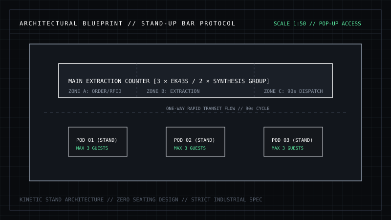

據點地址
LOCATION / ADDRESS
待補（即將公告第一座都會快閃立飲點）
僅提供外帶與立飲吧台。專為都會快節奏量身打造的極速純黑動能站，捨棄多餘座位與繁複流程，純粹專注於一杯精準萃取。

依照規格嚴格執行資料真實性規範，未經官方正式公布前一律保留「待補」標示；確認正式據點與聯繫管道後即刻啟用導航與直撥功能。
為了維護無座立飲吧台的流通效率與感官品質，請遵循以下快閃動線守則。
透過線上或現場感應預點單，系統自動分配萃取序列。請依照地貼動線單向移動，取餐完成後迅速移至立飲區或直接外帶。
現場設置 3 座不鏽鋼獨立立飲高吧台，建議停留時間為 5 至 10 分鐘，在最適品飲溫度下享用完畢後釋出空間。
凡攜帶口徑相容且清潔之不鏽鋼/陶瓷隨行保溫瓶，全品項飲品享有 NT$ 5 現折優惠，由專業感測水柱進行高壓瞬清。
全店落實 100% 無現金支付，支援 Apple Pay、Google Pay、LINE Pay、感應信用卡與各類行動無接觸金融載具。